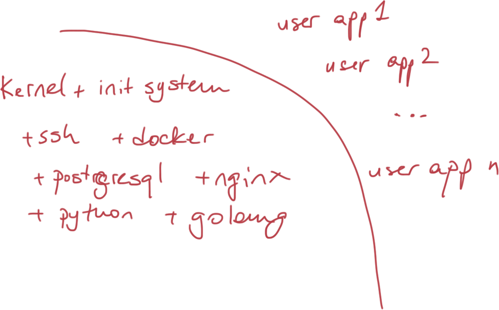
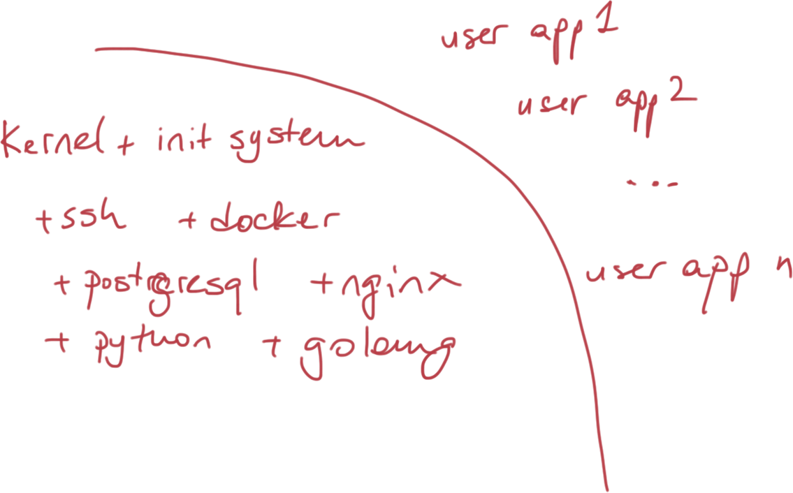

About Me
Victor Farazdagi (@farazdagi):
- MSCS Student @ Georgia Tech. (Specialization: Systems)
- Chef Engineer @ Square Labs

Paradigm Shift
What can we do to improve the security of the Internet?
CoreOS: Mission & Goals
Warehouse-scale Machine
- Clusters
- Redundancy and HA

CoreOS: Mission & Goals
Overall Architecture
 

CoreOS: Mission & Goals
Top Features
- Minimal (based on Gentoo)
- Secure (Automatic Updates)
- Designed for HA clusters
CoreOS is a new Linux distribution that has been rearchitected to provide features needed to run modern infrastructure stacks. from https://coreos.com
CoreOS: Mission & Goals
CoreOS is..
CoreOS: Mission & Goals
Why containers?
- Containers vs VMs (wrong dichotomy)
- Containers imply distributed architecture
OS-level Virtualization aka Containerization
Docker
$ sudo docker run ubuntu /bin/echo 'hello world'
$ sudo docker run -i -t ubuntu /bin/bash
It is trivial:
- Create Images i.e. Dockerizing Apps
- Distributing images and running containers
- Linking containers together
- Managing data using volumes
and volume containers
OS-level Virtualization aka Containerization
Dockerizing Apps: App Source Code
package main
import (
"fmt"
"html"
"log"
"net/http"
)
func main() {
http.HandleFunc("/", func(w http.ResponseWriter, r *http.Request) {
fmt.Fprintf(w, "Hello %s", html.EscapeString(r.URL.Path))
log.Println("GET", html.EscapeString(r.URL.Path))
})
log.Fatal(http.ListenAndServe(":8080", nil))
}
OS-level Virtualization aka Containerization
Dockerizing Apps: Dockerfile
FROM golang:1.4
# Bundle app source
COPY . /go/src/github.com/farazdagi/dumbserver
# Install app
RUN cd /go/src/github.com/farazdagi/dumbserver; go install
EXPOSE 80
CMD ["dumbserver"]
- Good example of gradual specialization of the image
OS-level Virtualization aka Containerization
Dockerizing Apps: Results
$ sudo docker build -t farazdagi/dumbserver $ sudo docker run -d -p 5577:80 farazdagi/dumbserver
Now we can query our dumb server:
$ http GET localhost:5577 HTTP/1.1 200 OK Content-Length: 7 Content-Type: text/plain; charset=utf-8 Date: Thu, 12 Feb 2015 21:32:23 GMT Hello / $ http GET localhost:5577/foo/bar HTTP/1.1 200 OK Content-Length: 14 Content-Type: text/plain; charset=utf-8 Date: Thu, 12 Feb 2015 21:32:28 GMT Hello /foo/bar
OS-level Virtualization aka Containerization
Rocket Runtime
- Docker quickly becoming a platform not just Container Runtime
- App Container is a specification of an image format, runtime, and discovery protocol for running a container.
- Rocket is in early stages, Docker will be supported (or so they say)
OS-level Virtualization aka Containerization
So why containers?
Because they are fast, portable and lightweight.
OS-level Virtualization aka Containerization
cloud-config
- Configuration in YAML
- Configuration is parsed and corresponsing systemd unit files are generated.
- Allows you to setup:
- Discovery parameters
- Configure systemd units
- Network
- SSH keys and Users
Cluster Setup & Configuration
cloud-config: minimal example
#cloud-config
coreos:
etcd:
discovery: https://discovery.etcd.io/47f61dc8b1c4bcb4d9be296099fa57da
addr: $private_ipv4:4001 # for multi-region and multi-cloud use $public_ipv4
peer-addr: $private_ipv4:7001
fleet:
public-ip: $private_ipv4 # used by fleetctl client
units:
- name: etcd.service
command: start
- name: fleet.service
command: start
Cluster Setup & Configuration
start DO cluster
read TOKEN
# provide token
read SSH_KEY_ID
# provide SSH key id
curl -X POST https://api.digitalocean.com/v2/droplets \
-H 'Content-Type: application/json' \
-H "Authorization: Bearer $TOKEN" \
-d '
{
"name":"core-1",
"region":"ams3",
"size":"512mb",
"image":"coreos-stable",
"ssh_keys":['$SSH_KEY_ID'],
"backups":false,
"private_networking":true,
"user_data": "'"$(cat config/cloud-config.yaml | sed 's/"/\\"/g')"'"
}'
Cluster Setup & Configuration
Check DO cluster
Create droplets:
$ env TOKEN=$TOKEN SSH_KEY_ID=$SSH_KEY_ID bin/create-droplet.sh core-1 $ env TOKEN=$TOKEN SSH_KEY_ID=$SSH_KEY_ID bin/create-droplet.sh core-2 $ env TOKEN=$TOKEN SSH_KEY_ID=$SSH_KEY_ID bin/create-droplet.sh core-3
Login into any machine and check discovery:
# ssh into any of core-* boxes and see if cluster discovery actually worked: core@core-1 ~ $ fleetctl list-machines MACHINE IP METADATA 0bb7e700... 10.133.194.91 - 330a6b08... 10.133.194.90 - eecedbb6... 10.133.194.85 -
Cluster Setup & Configuration
Service Configuration & Discovery (etcd)
etcd is:
- Actively developed (in Go)
- Distributed Key-Value Store
- Highly Available
- Automatic Leader Election (via Raft)
- Simple: CURLable HTTP API
- Fast: Ks of writes per second (per instance)
Cluster Setup & Configuration
Sample etcd API usage
core@core-1 ~ $ curl -L http://127.0.0.1:4001/version
etcd 0.4.6
core@core-1 ~ $ curl -L http://127.0.0.1:4001/v2/keys/foo -XPUT -d value=bar
{
"action":"set",
"node":{
"key":"/foo",
"value":"bar",
"modifiedIndex":273,
"createdIndex":273
}
}
core@core-1 ~ $ curl -L http://127.0.0.1:4001/v2/keys/foo
{
"action":"get",
"node":{
"key":"/foo",
"value":"bar",
"modifiedIndex":273,
"createdIndex":273
}
}
Cluster Setup & Configuration
systemd overview
systemd:
- init system: allows to start/stop/manage processes
- you manage Docker containers via systemd unit files
- built to replace Linux init system, and was successful in that regard
Running Services in CoreOS Clusters
systemd: example
[Unit] Description=MyDumbServer After=etcd.service After=docker.service [Service] TimeoutStartSec=0 ExecStartPre=-/usr/bin/docker kill dumbserver ExecStartPre=-/usr/bin/docker rm dumbserver ExecStartPre=/usr/bin/docker pull farazdagi/dumbserver ExecStart=/usr/bin/docker run --name dumbserver -p 80:80 farazdagi/dumbserver ExecStartPost=/usr/bin/etcdctl set /services/dumbserver/%H running ExecStop=/usr/bin/docker stop dumbserver ExecStopPost=/usr/bin/etcdctl rm /services/dumbserver/%H [Install] WantedBy=multi-user.target
Running Services in CoreOS Clusters
systemd: running the example
$ cd /etc/systemd/system $ sudo systemctl enable dumbserver.service $ sudo systemctl start dumbserver.serviceTest Running Service:
$ curl -L localhost:80/foo/bar Hello /foo/bar $ docker ps $ journalctl -f -u dumbserver.serviceStop Service:
$ sudo systemctl stop dumbserver.service
Running Services in CoreOS Clusters
fleet overview
- tool that controls systemd at the cluster level
- normal systemd unit files + few fleet-specific properties
Running Services in CoreOS Clusters
fleet: example
[Unit]
Description=MyDumbServer
After=etcd.service
After=docker.service
[Service]
User=core
TimeoutStartSec=0
ExecStartPre=-/usr/bin/docker kill dumbserver
ExecStartPre=-/usr/bin/docker rm dumbserver
ExecStartPre=/usr/bin/docker pull farazdagi/dumbserver
ExecStart=/usr/bin/docker run --name dumbserver -p 80:80 farazdagi/dumbserver
ExecStartPost=/usr/bin/etcdctl set /services/dumbserver/%H:%i '{Host: %H, port: 80}'
ExecStop=/usr/bin/docker stop dumbserver
ExecStopPost=/usr/bin/etcdctl rm /services/dumbserver/%H:%i
[X-Fleet]
Conflicts=dumbserver@*.service
Running Services in CoreOS Clusters
fleet: running the example
$ fleetctl submit dumbserver\@.service $ fleetctl list-unit-files UNIT HASH DSTATE STATE TARGET dumbserver@.service 063a727 inactive inactiveStart Services:
$ fleetctl start dumbserver@1 Unit dumbserver@1.service launched on 00d1d58c.../10.133.194.85 $ fleetctl start dumbserver@2 Unit dumbserver@2.service launched on 3d567ffd.../10.133.194.91Test Services:
$ curl -L 10.133.194.85:80/foo/bar # returns: Hello /foo/bar $ curl -L 10.133.194.91:80/foo/bar # returns: Hello /foo/bar $ etcdctl ls /services/dumbserver /services/dumbserver/core-1:1 /services/dumbserver/core-2:2
Running Services in CoreOS Clusters
Updating CoreOS
- Omaha Protocol
- Pull based model
- Dual-partion scheme
- Reboot manager (locksmith)
Restart strategies:- wait for etcd lock
- best effort (default)
- immediate restart
Updating Cluster
Clustering Approaches
Cluster Setup & Configuration
Thank You!
Conclusion & Take-Aways